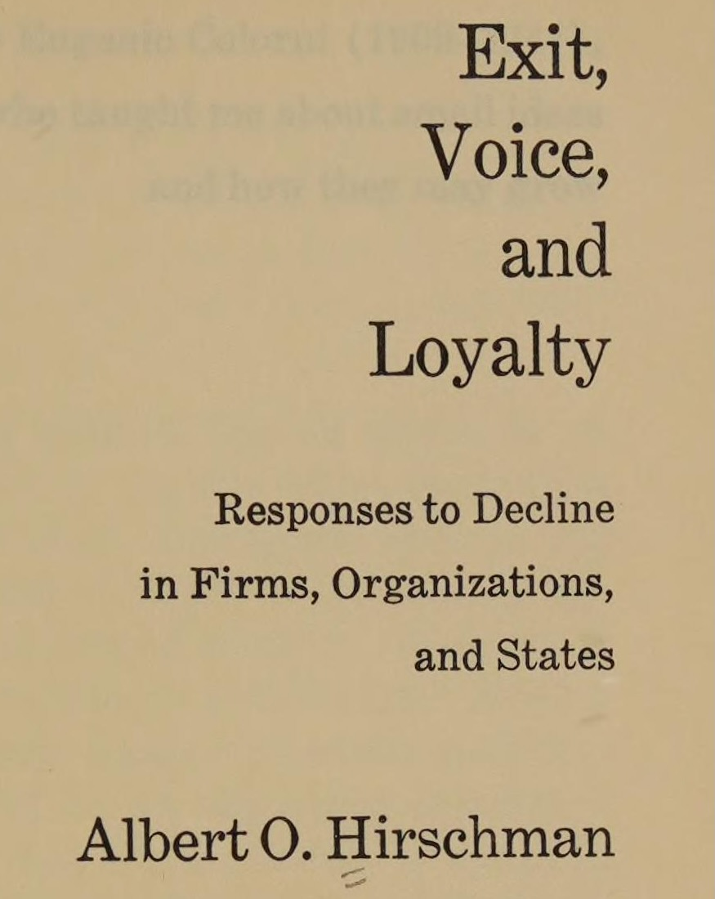
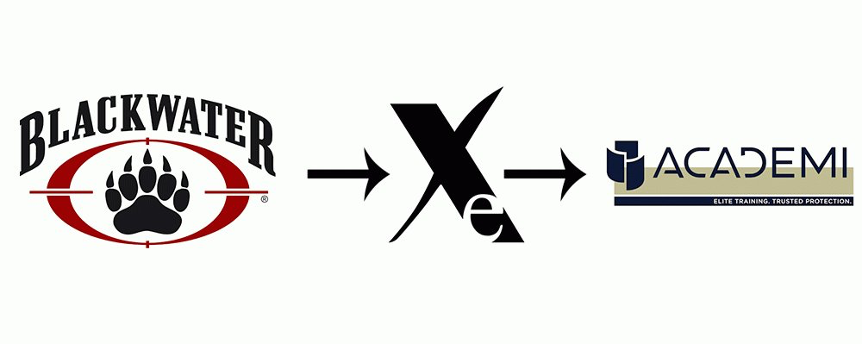

Week 9: Privacy Policies, Incomplete Contracts, and Power
DSAN 5450: Data Ethics and Policy
Spring 2024, Georgetown University
Week 8 Recap
\[ \DeclareMathOperator*{\argmax}{argmax} \DeclareMathOperator*{\argmin}{argmin} \newcommand{\nimplies}{\;\;\not\!\!\!\!\implies} \]
1. Privacy Policies Take a Long Time to Read!

2. Reading Privacy Policies \(\neq\) Understanding Privacy Policies!
- Reading vs. understanding implications / contingencies / ambiguities…
- NLP could (and should!) be helpful (“making privacy policies machine readable […] would help users match privacy preferences against policies offered by web services”), but mostly just reveals how bad the problem is:

The Intuitive Problem of Contracts
- Hard to read, harder to understand, possibly rly bad stuff in them, won’t know until you read + understand
- Solution (in theory… in modern liberal market-based democracies): Collective action!
- Option 1 (Exit): Find better platform, use it instead \(\Rightarrow\) company dies (competitive market)
- Option 2 (Voice): Raise a fuss, hoot and holler, make a big stink about it, etc.
- \(\Rightarrow\) (2a) Company will change/remove it to avoid embarrassment and/or prevent Option 1 becoming an option
- \(\Rightarrow\) (2b) Government intervention (hypothetical functional government)


Understanding Rights \(\leftrightarrow\) Fighting for Rights
- “Hohfeldian” framework (Hohfeld 1913)
- A right \(r_i\) granted to person \(i\) \(\implies\) A duty/obligation imposed on everyone in the world besides \(i\) (to respect \(r_i\))
- A duty or obligation \(d_i\) imposed on a person \(i\) \(\implies\) A right granted to everyone in the world besides \(i\) (to… be a potential beneficiary of \(d_i\))
- \(\implies\) rough measures of relative power in a contract:
\[ \frac{\text{rights}_i}{\text{rights}_j} = \frac{\text{obligations}_j}{\text{rights}_j} = \frac{\text{rights}_i}{\text{obligations}_j} = \frac{\text{obligations}_j}{\text{obligations}_i} \]
The Adversarial-Sisyphusian Problem of Contracts
- Recall Intuitive Problem of Causal Inference: Correlation \(\nimplies\) Causation, but can do a bunch of work to overcome
- Adversarial-Sisyphusian Problem is one level worse üò±
- IPCI: You vs. discovered correlation (inanimate)
- ASPC: You vs. companies investing resources üí∞ into making the problem harder and harder for you
- tldr: The moment you (\(N=1\), $) finally find and ‚Äúfix‚Äù bad thing, company (\(N \gg 1\), $$$) adds more ambiguity to re-enable / sends your data to """new""", """different""" 3rd-party processor ü•∏
The Devastating Consequences of Corporate Scandals
- Nisour Square Massacre (16 Sept 2007): Four Blackwater private military contractors mow down unarmed Iraqi civilians, killing 17, injuring 20
- Devastating for innocent Iraqis, but… perhaps even more devastating for Blackwater?
- (TW for next slide: Horrific consequences for murdering 17 civilians in a country 6915 miles away)
Consequences for the Contractors
- All pardoned (#GodsPlan)
- Can make tax-deductible donation to charity supporting them (I couldn’t find the tax-deductible donation page for the Iraqi families, lmk if you find)
Consequences for Blackwater
- They had to, like, design a whole new logo and stuff


No Logo / Why Johnny Can’t Dissent
- Naomi Klein’s No Logo (1999) sparked a nationwide boycott of companies employing sweatshop labor
- Great success; all companies responded and (out of the kindness of their hearts) cut ties with all of the sweatshops
- Instead, they established ties with supply chain management companies, who made the profit-maximizing decision to re-establish ties with all of the sweatshops
“You can’t outrun them, or even stay ahead of them for very long: it’s their racetrack, and that’s them waiting at the finish line to congratulate you” (Frank 1994)
Conclusion

Incomplete Contracts
The Fundamental Problem of Contracts
- Just as we can’t observe two simultaneous worlds \(W_{X = 0}\) and \(W_{X = 1}\) which differ only in the value of \(X\),
- We can’t foresee all possible contingencies that need to be included in a contract
- (We can try, though! Hence use of obfuscatory words to minimize liability)
- So, when a situation arises which is not covered by a clause in the contract, what happens? What principle determines whose interpretation wins out?
- (Hint: It is actually literally my legal middle name…)
…POWER!
- Examples from employment contracts (tooting own horn):
- In a private, cooperatively-owned, democratic firm, outcome determined by conversation, majority vote, unanimity, etc.
- These technically exist in the US! Employing 2,380 workers, \(\frac{2380}{127509000} \approx 0.0019\%\) of US workforce
- Otherwise, in a non-unionized private firm (94% of total), the outcome is determined by organizational hierarchy
- This is the case for \(\frac{125000000}{127509000} \approx 98.03\%\) of US workforce
Descriptive and Normative Considerations
The combined effect of incomplete contracts and conflicts of interest is that the determination of outcomes depends on who exercises power in the transaction.
Power is generally exercised by those who hold the residual rights of control, meaning the right to determine what is not specified contractually
- [Step 1: Measurable, empirically verifiable, etc.] Who has power w.r.t. a given incomplete contract?
- [Step 2: Up to you and your ethical axioms] Who ought to have power w.r.t. incomplete contracts?
Working Definition of Power
Measuring Contractual Power
(Gist of) Wealth-Power Correspondence Theorem
[Axiom] Standard (Walrasian) perfectly-competitive equilibrium, no entry/exit barriers, minus complete-contracts assumption
- “Individual wealth levels \(\omega_{i,t}\) determine how individuals come to hold differing structural positions”: \(i\)’s structural position \(P_{i,t}\) determined by set of feasible contracts available at \(t\)
- Individual optimization of contractual arrangements between \(i\) and \(j\) (effort level \(e_i^*\), monitoring \(m_j^*\)) gives rise to authority structure \(\Rightarrow\) well-defined, measurable degree of power \(\rho_{i \rightarrow j}(w_i, z_j)\) (\(j\) has outside option \(z_j\), \(i\) offers wage \(w_i > z_j\))
- [Given two agents \(i, j\)] \(\rho_{i \rightarrow j} > \rho_{j \rightarrow i}\) if and only if \(\omega_i > \omega_j\) üëÄüßê
Possible Steady-State Equilibria (Skipping Lots of Math)
| Produces for Self? | Hires Labor? | Sells Labor? | Agricultural | Industrial | Post-Industrial | Wealth \(\omega_i^*\) |
|---|---|---|---|---|---|---|
| Bourgeoisie (Bosses) | ||||||
| ❌ | ✅ | ❌ | Landlord | Capitalist | CEO | \(\omega_i^* \geq \frac{b}{\pi}\) |
| Doesn't need to work at all (provides capital to their workers) | ||||||
| ✅ | ✅ | ❌ | Rich peasant (Kulak) | Capitalist | Small business owner | \(\frac{ba}{1-a} < \omega_i^* < \frac{b}{\pi}\) |
| Not enough capital to hire workers to produce full consumption bundle | ||||||
| Petit Bourgeoisie (Independent / ‘Yeoman’ Workers) | ||||||
| ✅ | ❌ | ❌ | Peasant | Artisan | Full-time Etsy | \(\omega_i^* = \frac{ba}{1-a}\) |
| Has no boss; doesn't boss others | ||||||
| Proletariat (Working Class) | ||||||
| ✅ | ❌ | ✅ | Poor Peasant | Semi-Proletarian | Uber driver after work | \(0 < \omega_i^* < \frac{ba}{1-a}\) |
| Small plot of land, insufficient for producing consumption bundle; "Proletarianizing" | ||||||
| ❌ | ❌ | ✅ | Landless peasant | Proletarian | Service worker | \(\omega_i^* = 0\) |
| Nothing but labor power to sell ("Nothing but chains to lose") | ||||||
The Crucial Input: Initial Conditions
- Steady states on previous slide are absorbing states of stochastic process! \(w_{i,0} \rightarrow w_{i,1} \rightarrow \cdots\)
- For every agent \(i\), some time \(T_i\) such that \(\omega_{i,t}\) will be in one of those five states for \(t \geq T_i\)
- But how do we know which of the five states a given person will end up in?
- It’s a stochastic system, so can’t say with certainty, but can derive results about which initial conditions maximize \(\Pr(\omega_i^* = S \mid \omega_{i,0})\)…
tldr
- The full story: Late-feudal Enclosure Movement / Samir Amin, Accumulation on a World Scale (1970)
- The overly-flippant gist →
- The less-flippant gist: Locke’s Second Treatise of Government (1689)